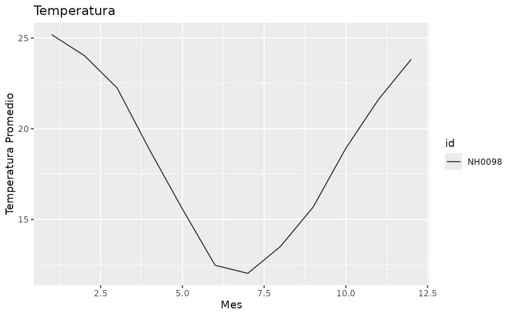
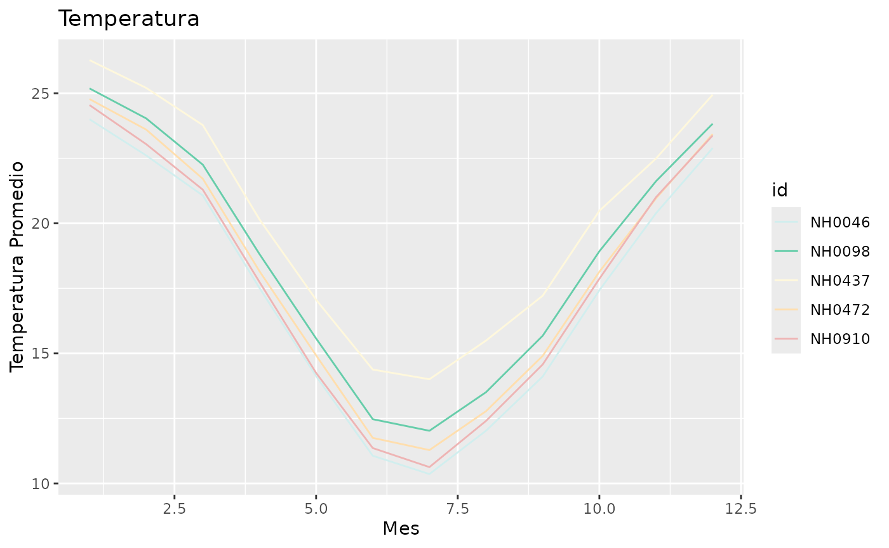

Importamos el paquete:
Esta es una viñeta que explica el uso de las funciones del paquete.
Funcion 'celsius_to_fahrenheit'
Esta función toma una temperatura en grados Celsius y la convierte en grados Fahrenheit.
Ejemplo de uso de la funcion 'celsius_to_fahrenheit'
celsius_to_fahrenheit(-5)
#> [1] 23Funcion 'descargar_datos'
Esta función toma el ID de una estación y una dirección de ruta y descarga en dicha dirección un csv con los datos meteorologicos de la estación con dicho ID.
Ejemplo de uso de la funcion 'descargar_datos'
datos <- descargar_datos("NH0098", "ruta_de_ejemplo")
#> Warning: One or more parsing issues, call `problems()` on your data frame for details,
#> e.g.:
#> dat <- vroom(...)
#> problems(dat)
#> Rows: 23733 Columns: 35
#> ── Column specification ────────────────────────────────────────────────────────
#> Delimiter: ","
#> chr (2): id, direccion_viento_1000cm
#> dbl (21): temperatura_abrigo_150cm, temperatura_abrigo_150cm_maxima, temper...
#> lgl (11): temperatura_intemperie_50cm_minima, temperatura_inte_5cm, tempera...
#> date (1): fecha
#>
#> ℹ Use `spec()` to retrieve the full column specification for this data.
#> ℹ Specify the column types or set `show_col_types = FALSE` to quiet this message.Funcion 'grafico_temperatura_mensual'
Esta funcion devuelve un gráfico que muestre el promedio mensual de la temperatura de abrigo.
Ejemplo de uso de la funcion
'grafico_temperatura_mensual'
Una estacion:
load("../data/estaciones_merged.rda")
grafico_temperatura_mensual(datos, titulo = "Temperatura")
Varias estaciones:
grafico_temperatura_mensual(estaciones_merged, titulo = "Temperatura")
Funcion 'tabla_resumen_temperatura_mensual'
Esta función crea una tabla de resumen de la temperatura_abrigo_150cm para una o más estaciones.
Ejemplo de uso de la funcion
'tabla_resumen_temperatura_mensual'
tabla_resumen_temperatura(estaciones_merged)
#> # A tibble: 5 × 4
#> id min_temp max_temp mean_temp
#> <chr> <dbl> <dbl> <dbl>
#> 1 NH0046 -0.25 34.6 17.3
#> 2 NH0098 -17.4 37.4 18.6
#> 3 NH0437 2.1 36.3 20.2
#> 4 NH0472 0.55 34.8 18.0
#> 5 NH0910 0 35.2 17.7